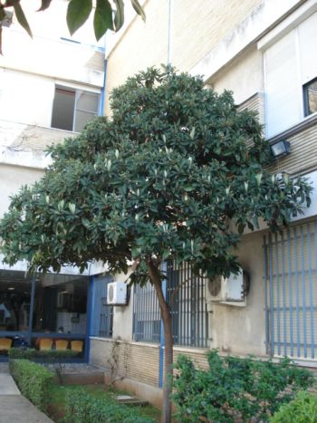
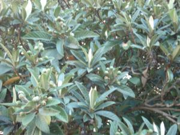

|
Eriobotrya japonica Lindl.,
Trans. Linn. Soc. London 13: 102 (1821)
|
Rosáceas Dicotiledóneas |
| Níspero del Japón |
Árbol perennifolio |
| Árbol perennifolio, de
4-6 m, tronco corto, delgado; corteza fisurada, gris; copa
redondeada, densa, con ramas abiertas y con algunas espinas. Hojas simples, alternas, cortamente pecioladas; lámina 15-25 cm, elípticas, dentadas, acuminadas, con nervios prominentes, de color verde oscuro, brillante por el haz y pubescente por el envés, al menos cuando jóvenes. Inflorescencia en panícula terminal, pubescente. Flores hermafroditas, de c. 1,7 cm, olorosas, con pedicelo y cáliz tomentosos; 5 pétalos blancos. Florece de diciembre a enero. Fruto de tipo pomo, de 3-5 cm, globoso, de color amarillo, con el cáliz persistente, comestible, con 2-4 semillas de color marrón oscuro y brillantes; pulpa algo ácida, amarilla. Maduran entre mayo y junio |
 |
|
 |
Observaciones:
El nombre genérico significa en griego racimo (botrys) lanudo (erio-) y el específico alude a su procedencia. Los frutos y las hojas tienen propiedades astringentes y expectorantes. Los nísperos son ricos en vitamina C y su fermentación produce una bebida ligeramente alcohólica. En la actualidad, esta especie ha sustituido en cultivo al níspero europeo, Crataegus germanica (L.) Kuntze (= Mespilus germanica), originario del SO de Asia. |
Área de origen.- Procede
de China. Sin embargo fue en Japón donde primero se
cultivó para aprovechar sus frutos. De allí se introdujo
en Europa en el s. XVIII. |
|
| Uso en el
campus: 2 únicos ejemplares en el Campus |
Localización: Escuelas de Arquitectura: EUAT, parking Parte central del Campus: Fac. de Matemáticas |
| Rocío Barroso Gacía &
Carlos Romero Zarco (2007) Versión 2: C.R.Z. (2026) |
|